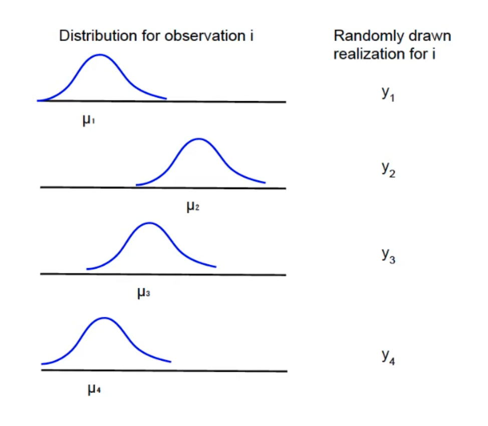
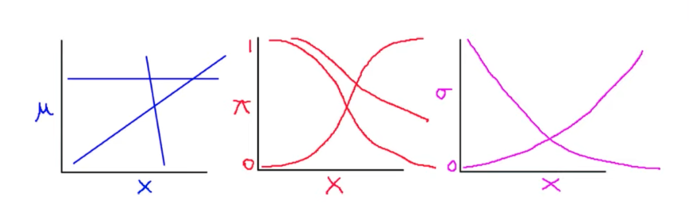
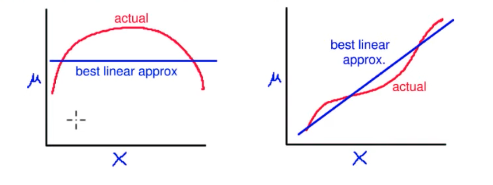

Statistical inference
Reasoning under uncertainty
https://pages.cs.wisc.edu/~dyer/cs540/notes/uncertainty.html
Reasoning = the process of thinking about something in a logical way in order to form a conclusion or judgment | the drawing of inferences or conclusions through the use of reason
Agents (and people) want to make rational decisions even when they are not certain about the truth or falsity of a proposition.
Rather than reasoning about the truth or falsity of a proposition, reason about the belief that a proposition (or an event) is true (or is going to happen).
For each primitive proposition (or event), attach a degree of belief to the sentence.
Use probability theory as a formal method of manipulating degrees of belief.
Given a proposition, A, assign a probability, P(A), such that 0 <= P(A) <= 1, where if A is true, P(A)=1, and if A is false, P(A)=0. Proposition A must be either true or false, but P(A) summarizes our degree of belief in A being true.
Obtaining and Interpreting Probabilities
There are several senses in which probabilities can be obtained and interpreted, among them the following:Frequentist Interpretation
The probability is a property of a population of similar events. E.g., if set S = P union N, and P intersection N is the empty set, then the probability of an object being in set P is |P|/|S|. Hence, in this interpretation probabilities come from experiments and determining the population associated with a given proposition.Subjectivist Interpretation
A subjective degree of belief in a proposition or the occurrence of an event. E.g., the probability that you’ll pass the Final Exam based on your own subjective evaluation of the amount of studying you’ve done and your understanding of the material. Hence, in this interpretation probabilities characterize the agent’s beliefs.
Axioms of probability theory
\(\Omega\): a finite set (the sample space)
\(A\): any subset of \(\Omega\) (an event), \(A \subseteq \Omega\)
\(P(A)\): the probability of \(A\) is a function that, given an event, returns a real number and satisfies the following axioms:
\(P(A) \ge 0\)
\(P(\Omega) = 1\)
\(P(A \cup B) = P(A) + P(B)\) if \(A \cap B = \varnothing\)
If \(\Omega\) is an infinite set, the last axiom becomes: for an infinite sequence of disjoint subsets/events \(A_1, A_2, \ldots\)
\(P(\cup_{i=1}^{\infty}{A_i}) = \sum_{i=1}^{\infty}{P(A_i)}\)
Theorems (a.k.a. rules) of probability theory
\(P(A) \le 1\)
\(P(\varnothing) = 0\)
\(P(A') = 1 - P(A)\)
\(P(A \cup B) = P(A) + P(B) - P(A \cap B)\)
Definitions of probability theory
\(P(A \cap B)\) is the joint probability of \(A\) and \(B\)
\(P(A \mid B) = \frac{P(A \cap B)}{P(B)}\) is the conditional probability of \(A\) given \(B\)
\(A\) and \(B\) are independent iff \(P(A \cap B) = P(A)P(B)\)
If \(A\) and \(B\) are independent then \(P(A \mid B) = P(A)\)
Bayes’ theorem/rule
\[ P(A \mid B) = \frac{P(B \mid A) P(A)}{P(B)} \]
Frequentist vs Bayesian inference
https://www.health.ny.gov/diseases/chronic/discreen.htm
Sensitivity and specificity are measures of a test’s ability to correctly classify a person as having a disease or not having a disease. Sensitivity refers to a test’s ability to designate an individual with disease as positive. A highly sensitive test means that there are few false negative results, and thus fewer cases that have the disease are missed. The specificity of a test is its ability to designate an individual who does not have a disease as negative. A highly specific test means that there are few false positive results, and thus fewer cases that do not have the disease are misdiagnosed. It is desirable to have a test that is both highly sensitive and highly specific. This is frequently not possible. Typically there is a trade-off.
The probability of having the disease, given the results of a test, is called the predictive value of the test. Positive predictive value is the probability that a patient with a positive (abnormal) test result actually has the disease. Negative predictive value is the probability that a person with a negative (normal) test result is truly free of disease. Predictive value is an answer to the question: If my patient’s test result is positive, what are the chances that my patient does have the disease?
Predictive value is determined by the sensitivity and specificity of the test and the prevalence of disease in the population being tested. (Prevalence is defined as the proportion of persons in a defined population at a given point in time with the condition in question.) The more sensitive a test, the less likely an individual with a negative test will have the disease and thus the greater the negative predictive value. The more specific the test, the less likely an individual with a positive test will be free from disease and the greater the positive predictive value.
When the prevalence of preclinical disease is low, the positive predictive value will also be low, even using a test with high sensitivity and specificity. For such rare diseases, a large proportion of those with positive screening tests will inevitably be found not to have the disease upon further diagnostic testing. To increase the positive predictive value of a screening test, a program could target the screening test to those at high risk of developing the disease, based on considerations such as demographic factors, medical history or occupation. For example, mammograms are recommended for women over the age of forty, because that is a population with a higher prevalence of breast cancer.
PPV = (sensitivity x prevalence) / [ (sensitivity x prevalence) + ((1 – specificity) x (1 – prevalence)) ]
Disease screening
\(P(T^- \mid D^-) = 0.95\) (specificity)
\(P(T^+ \mid D^-) = 1 - \text{specificity} = 0.05\) (false positive a.k.a. type I error rate)
\(P(T^+ \mid D^+) = 0.8\) (sensitivity a.k.a. power)
\(P(T^- \mid D^+) = 1 - \text{sensitivity} = 0.2\) (false negative a.k.a. type II error rate)
\(P(D^+) = 0.01\) (prevalence)
\(P(D^-) = 1 - \text{prevalence} = 0.99\)
\(P(D^+ \mid T^+) = \frac{P(T^+ \mid D^+)P(D^+)}{P(T^+)} = \frac{P(T^+ \mid D^+)P(D^+)}{P(T^+ \mid D^+) P(D^+) + P(T^+ \mid D^-) P(D^-)}\) (PPV)
\(\text{PPV} = \frac{0.8 \times 0.01}{(0.8 \times 0.01) + (0.05 \times 0.99)} = 0.1391\)
Null hypothesis significance testing (NHST)
\(P(S^- \mid H_0) = 0.95\) (specificity)
\(P(S^+ \mid H_0) = 0.05\) (false positive a.k.a. type I error rate)
\(P(S^+ \mid H_A) = 0.3\) (sensitivity a.k.a. power)
\(P(S^- \mid H_A) = 0.7\) (false negative a.k.a. type II error rate)
\(P(H_A) = 0.1\) (prevalence)
\(P(H_0) = 0.9\)
\(P(H_A \mid S^+) = \frac{P(S^+ \mid H_A)P(H_A)}{P(S^+)} = \frac{P(S^+ \mid H_A)P(H_A)}{P(S^+ \mid H_A)P(H_A) + P(S^+ \mid H_0)P(H_0)}\) (PPV)
\(\text{PPV} = \frac{0.3 \times 0.1}{(0.3 \times 0.1) + (0.05 \times 0.9)} = 0.4615\)
Due to the low power of research studies and the publication bias for (statistically) significant and sensational findings, most published research findings are false!
Simply viewing an image of Rodin’s sculpture “The Thinker” promotes religious disbelief.

https://www.science.org/doi/10.1126/science.1215647


Quantities of interest in empirical quantitative research
Empirical research = research based on observation or experimentation
Quantitative research = research based on measurements, i.e., the quantification of attributes of an object or event, which can be used to compare with other objects or events
Measurements can be categorized by the following criteria:
type (or level)
magnitude
unit
uncertainty (represents the systemic and random errors of measurement procedures)
Quantities of interest (QOI) in empirical quantitative research:
Data summaries
Inference
Descriptive inference
Counterfactual inference
Prediction
What-If
Causal inference (two perspectives):
Causal prediction: Prediction of intervention
knowing a cause means being able to predict the consequences of an intervention
“What if I do this?”Causal imputation: Imputation of missing data
Knowing a cause means being able to impute unobserved counterfactual outcomes
“What if I had done something else?”
Statistical inference
Inference is “using facts you know to learn about facts you don’t know”.
Statistical inference workflow:
Choose: substantive question of interest
Formalize: quantity of interest (QOI), given question
Collect: data, given QOI and question
Assume: class of models, given data, QOI and question
Estimate from data: best model in class, given class of models, data, QOI and question
- An estimator is a function of the data (e.g., the MLE) used to choose the best model in the class of models
Present results: given all of the above
- QOI point and interval estimates
- Weaknesses and limitations
Statistical models
A model is an abstraction/approximation (e.g., sketch of a person).
All models are wrong, some are useful!
Statistical models are very useful for inference.
Notation
Dependent (or “outcome”) variable (aka “variate”):
\(Y\) is a \(n \times 1\) vector (column)
\(y_i\) is a number (after we know it)
\(Y_i\) is a random variable (before we know it)
A dependent variable \(Y\) is therefore either fixed or random:
A column of numbers within a dataset
A column of random variables across datasets
Explanatory (or “independent” or “exogeneous”) variables (aka “covariates”, “predictors”)
\(X = \{x_{ij}\}\) is a \(n \times k\) matrix (\(n \times k\) numbers organized in a table with \(n\) rows and \(k\) columns).
Every column is a variable.
Every row is an observation: \(x_i = \{ x_{i1}, \ldots, x_{ik} \}\)
\(X\) as a set of columns (variables): \(X = \{ x_1, \ldots, x_k \}\)
\(X\) is fixed, not random!
Equivalent linear regression notation
Standard notation:
\(Y_i = x_i \beta + \epsilon_i = \text{systematic} + \text{stochastic}\)
Systematic: \(x_i \beta = \beta_0 + \beta_1 x_{i1} + \ldots + \beta_k x_{ik}\)
Stochastic: \(\epsilon_i \sim \text{Normal}(0, \sigma)\)
Alternative notation:
Stochastic: \(Y_i = \text{Normal}(\mu_i, \sigma)\)
Systematic: \(\mu_i = x_i \beta\)

Generalized alternative notation for most models:
Stochastic: \(Y_i \sim f(\theta_i, \alpha)\)
Systematic: \(\theta_i = g(x_i, \beta)\)
where:
\(Y_i\) is the random outcome variable
\(f(\cdot)\) is a probability density/mass function (probability distribution)
\(\theta_i\) is a parameter of the probability distribution \(f(\cdot)\) that varies over \(i\)
\(\alpha\) is a parameter of the probability distribution \(f(\cdot)\) that doesn’t vary/is constant over \(i\)
\(g(\cdot)\) is the functional form (e.g., linear for linear models)
\(x_i\) is the explanatory variable vector for \(i\) (an observation)
\(\beta\) are the effect parameters/regression coefficients
Forms of uncertainty
Estimation uncertainty: Lack of knowledge of \(\alpha\) and \(\beta\). Gets smaller as \(n\) gets larger.
Fundamental uncertainty: Represented by the stochastic component \(f(\cdot)\). Exists no matter what you do, or the size of \(n\) is.
Model dependence: Maybe the model specification is wrong?
Examples of systematic components

Each is a class of functional forms
\(\beta\) in each is an “effect parameter” vector, with a different meaning
Set \(\beta\) and it picks out one member of the class
Standard procedure:
Use theory: Assume a class of functional forms
User data: Estimate the values of the parameters
Remain uncertain: Because of 1) estimation uncertainty, 2) fundamental uncertainty, 3) model dependence
If we choose the wrong class of functional forms, we:
have specification error, and potentially bias
still get the best [linear, logit, exponential] approximation to the correct functional form
may be close or far from the truth

Examples of stochastic components
Normal: continuous, unimodal, symmetric, unbounded
Log-normal: continuous, unimodal, skewed, bounded from below by zero
Bernoulli: discrete, binary outcomes
Poisson: discrete, countably infinite on the nonnegative integers
Choosing systematic and stochastic components
If one is bounded, so is the other
If the stochastic component is bounded, the systematic component must be globally nonlinear (although possibly locally linear)
All modeling decisions are about the data generation process:
The chain of evidence from the world to our observation of it!
The first question you ask of every empirical paper!
What if we don’t know the DGP (and we usually don’t know it completely)?
The problem: model dependence
Our first approach: make “reasonable” assumptions and check fit (and other observable implications of the assumptions)
Later:
avoid model dependence by relaxing assumptions (functional form, distribution, etc)
detect remaining model dependence
remove model dependence: preprocess data (via matching, etc)
Data generation processes (with simulation)
Probability: Assumes the DGP
Statistical inference: Learns the DGP
Probability
Probability as a mathematical model of the DGP (the process that generated the data/observations in the real world).
Probability is a function
Probability is:
A mathematical function \(P(y \mid M) = P(\text{data} \mid \text{model})\), where \(M = (f, g, X, \beta, \alpha)\), that gives the probability of occurrence of an event \(z\), a subset of the sample space \(\Omega\).
Because \(M\) is assumed, we assume it is always there but we omit it to simplify the notation: \(P(y \mid M) = P(y)\) which itself is a shorthand for \(P(Y = y)\)
Three axioms define the function \(P(\cdot)\):
\(P(z) \ge 0\)
\(P(\Omega) = 1\)
If \(z_1, \ldots, z_k\) are mutually exclusive events: \(P(z_1 \cup \ldots \cup z_k) = P(z_1) + \ldots + P(z_k)\)
Axioms 1 and 2 imply \(0 \le P(z) \le 1\)
Axioms are not assumptions; they can’t be wrong! Probability is a just a very useful mathematical model [of uncertainty/the DGP]
From these axioms come ALL the rules of probability theory
These rules can be applied analytically or via simulation
Probability distributions are also functions
A probability distribution is a mathematical function (PDF for continuous variable, PMF for discrete variable) that gives the probabilities of occurrence of events, subsets of the sample space.
A probability distribution is a function \(p(y)\) such that:
\(p(y) \ge 0\) for any \(y\)
for a discrete variable: \(\sum_{\text{all}\ y} p(y) = 1\)
for a continuous variable: \(\int_{-\infty}^{\infty}p(y)dy = 1\)
Computing probabilities from PDFs/PMFs:
for a discrete random variable:
\(P(a \le Y \le b) = \sum_{a \le y \le b} p(y)\)
\(P(Y = y) = p(y)\)
for continuous random variable:
\(P(a \le Y \le b) = \int_a^b p(y)dy\)
\(P(Y = y) = 0\)
Probability vs likelihood
Statisticians use probability to describe uncertainty
Probability is a well-defined mathematical concept, uncertainty is a ill-defined English word!
Frequentists and Bayesians disagree on what kind of uncertainty [aleatoric vs epistemic] can be described/measured using probability!
What is probability? What is uncertainty?
Probability is a measure [of the uncertainty] [of occurrence of an event]
Probability distributions allocate parcels of probability to each possible outcome [in the sample space, such that they sum to one]
Probability distributions are often described by mathematical equations that are defined by one or more parameters
Probability fixes parameters and varies data
\(f(x) = p(x) = p(x \mid \Theta = \theta) = P(X = x \mid \Theta = \theta)\) probability distribution (sums to 1)
Likelihood fixes data and varies parameters
\(f(\theta) = l(\theta) = l(\theta \mid X = x) = P(X = x \mid \Theta = \theta)\) not a probability distribution (does not sum to 1)
[what about a joint distribution of data and parameters? https://youtu.be/yakg94HyWdE]
Bayes’ theorem:
\[ P(\Theta = \theta \mid X = x) = \frac{P(\Theta = \theta)P(X = x \mid \Theta = \theta)}{P(X = x)} \]
\[ p(\theta \mid X = x) \sim p(\theta) l(\theta \mid X = x) \]
Aleatoric and epistemic uncertainties are two types of uncertainties commonly encountered in probabilistic modeling and decision-making under uncertainty. They represent different sources and interpretations of uncertainty.
Aleatoric uncertainty:
Aleatoric uncertainty, also known as statistical uncertainty or inherent uncertainty, arises from the inherent randomness or variability in the observed data. It is irreducible even with infinite amounts of data and reflects the inherent unpredictability of the system being modeled. Aleatoric uncertainty is often associated with noise or variability within the data itself. It can be thought of as the uncertainty that remains even when we have observed all there is to know about a particular phenomenon.
Epistemic uncertainty:
Epistemic uncertainty, also known as model uncertainty or knowledge uncertainty, arises from the lack of knowledge or incomplete understanding about the underlying system being modeled. It is a result of limitations in the available data or the model’s inability to fully capture the true complexity of the system. Unlike aleatoric uncertainty, epistemic uncertainty can, in principle, be reduced with additional information or improved modeling techniques. It represents uncertainty that could be resolved with more data or a better model.
To summarize, aleatoric uncertainty represents the irreducible randomness or inherent variability in the data, while epistemic uncertainty arises from the lack of knowledge or incomplete understanding about the system being modeled. Aleatoric uncertainty cannot be reduced even with more data, while epistemic uncertainty can be reduced through further investigation, better data collection, or improved modeling techniques.